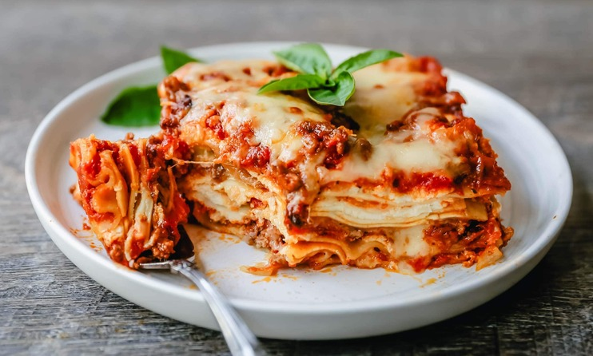

Lasagna Recipes

Description
THE BEST CLASSIC LASAGNA RECIPE
The perfect lasagna recipe made with parmesan ricotta cheese filling, melted mozzarella cheese, lasagna noodles, and a robust tomato meat sauce. It is the best lasagna recipe!
Steps
- Start by making a homemade meat sauce. This is done by sautéing an onion in olive oil until it begins to soften. This brings out the sweet flavor of the onion. Then it is time to brown the ground beef until it is browned and the onion is softened. Stir in the marinara sauce and let it simmer on low. If you want your lasagna to be extra saucy, I suggest adding ½ jar more marinara sauce.
- Make a parmesan ricotta cheese mixture. This is what gives the lasagna the creamy filling. I love to flavor the ricotta cheese with a good amount of parmesan cheese, spices, and egg to bind it together.
- There are two choices for lasagna noodles -- oven-ready pre-cooked noodles or lasagna noodles that need to be cooked before hitting the oven. I have tried both ways and can attest that they both work!
- Bring on the cheese! The best lasagna is full of cheese so be generous with the layers of mozzarella cheese.
- Bake covered for 15 minutes and then remove the foil and continue to cook until the cheese is bubbly. Let it set up for 10 minutes before serving.